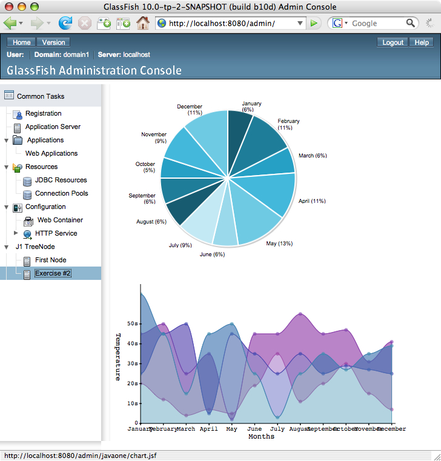
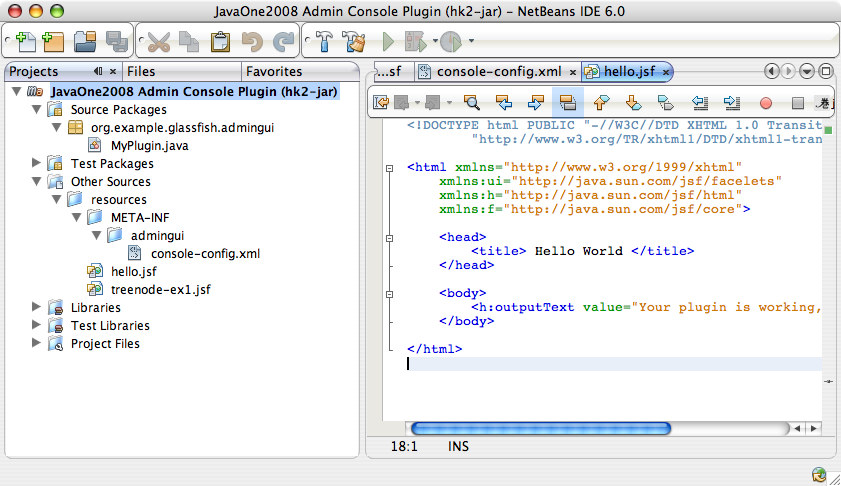

Exercise 2: Charting with jMaki
Introduction:
The goal of this exercise is to create a JSF page which utilizes the jMaki Charting component and link the page to the GlassFish Administration Console by adding another tree node in the GlassFish Administration Console. When you have completed this exercise, your plugin will resemble the following image:

In this exercise you will learn the following concepts:
- How to add jMaki widget to a JSF page.
- How to add a plugin to the Administration Console that
links to another plugin
IntegrationPoint.
To learn background information about jMaki, proceed to the next section. To begin creating the jMaki Charting JavaServer Faces page immediately, proceed to the Step-by-Step Instructions.
Background Information:
TBD: More info relating to jMaki
% mv gfplugin/myplugin gfplugin/myplugin.save
% mkdir gfplugin/myplugin
% cp -R gfplugin/solution/myplugin/ex1 gfplugin/myplugin
Step-by-Step Instructions:
Overview:
In this excercise, you will complete the following:
- Create a jMaki Charting page
You will create a JSFTemplating JavaServer Faces pages that contains a jMaki Charting component
- Modify your console-config.xml
You will modify your configuration file to add a new
IntegrationPoint - Specify your Tree Node layout
In this step you will add the file "treenode-ex2.jsf" for specifying the new tree node that points to the jMaki Charting page
- Build and Install your first GlassFish v3 plugin
In this step you will install and test your plugin.
Steps:
A. Create a jMaki Charting page
<sun:page>
<sun:html>
<sun:head title="chart" />
<sun:body>
<sun:form id="form">
<!-- Pie Chart -->
<sun:markup tag="div" style="width:380px; height: 310px;">
<jmaki:widget name="jmaki.charting.plotkit.pie"
args="{colorScheme:4}"
value="{
xAxis : {
title : 'Months',
labels : [
{label : 'January'},
{label : 'February'},
{label : 'March'},
{label : 'April'},
{label : 'May'},
{label : 'June'},
{label : 'July'},
{label : 'August'},
{label : 'September'},
{label : 'October'},
{label : 'November'},
{label : 'December'} ] },
data : [ {
label : 'Set 1',
values : [25, 45, 25, 45, 50, 25, 35, 25, 25, 20, 35, 45]
} ] }" />
</sun:markup>
<!-- Area Chart -->
<sun:markup tag="div" style="width: 500px; height: 280px;">
<jmaki:widget name="jmaki.charting.dojo.area"
value="{
xAxis : {
title : 'Months',
labels : [{ label : 'January'},
{ label : 'February'},
{ label : 'March'},
{ label : 'April'},
{ label : 'May'},
{ label : 'June'},
{ label : 'July'},
{ label : 'August'},
{ label : 'September'},
{ label : 'October'},
{ label : 'November'},
{ label : 'December'} ] },
yAxis : {
title : 'Temperature',
labels : [{ label : '0', value : 0},
{ label : '10s', value : 10},
{ label : '20s', value : 20},
{ label : '30s', value : 30},
{ label : '40s', value : 40},
{ label : '50s', value : 50} ] },
data : [{label : 'Gray Series', values : [65, 45, 15, 45, 50, 25, 3, 25, 35, 27, 35, 39] },
{label : 'Pink Series', values : [25, 45, 50, 5, 45, 35, 25, 35, 25, 29, 27, 25] },
{label : 'Blue Series', values : [45, 50, 25, 35, 2, 45, 45, 55, 45, 47, 31, 41] },
{label : 'Red Series', values : [20, 12, 4, 7, 5, 19, 35, 11, 20, 30, 15, 7] } ] }"/>
</sun:markup>
</sun:form>
</sun:body>
</sun:html>
</sun:page>
You should have myplugin project still open in
NetBeans. If you have closed the project, follow these steps to open
it again. More detailed instructions can be found in exercise 1-A
- Launch NetBeans IDE 6.0.
- Open
mypluginmodule:- Choose Open Project from the File menu.
- Browse to gfplugin and select myplugin module.
- Press the Open Project button. Your NetBeans Projects tab should show:

Figure 2-3: Open myplugin module.
- Create a page showing a jMaki chart:
- Select Other Sources --> resources.
- Create an empty file named "
chart.jsf". - Use Figure TBD as the content for chart.jsf.
 Figure 2-4: Edit chart.jsf.
Figure 2-4: Edit chart.jsf.
B. Modify your console-config.xml
You now need to add an IntegrationPoint for plugging the
Exercise 2 tree node into the Administration Console. Each plugin module
should have 1 console-config.xml, and you can specify as
many IntegrationPoints as needed in this configuration file.
Since you have created this file in Exercise 1, all you need to do now is
to edit it and add the second IntegrationPoint. You want the
Exercise 2 tree node to be under the JavaOne tree node. So, you must
specify the parentId to be "j1root". You can
refer to treenode-ex1.jsf to see this. You also
need to create the file treenode-ex2.jsf which will point to
the JSF jMaki chart page.
<integration-point
id="Another"
type="tree"
priority="230"
parentId="j1root"
content="treenode-ex2.jsf"
/>
- Double click on
console-config.xmlunder Other Sources --> resources --> META-INF --> admingui - Add the
IntegrationPointdeclaration as shown in Figure TBD to yourconsole-config.xmlfile. Figure 2-6: Modified console-config.xml file.
Figure 2-6: Modified console-config.xml file.
C. Specify your Tree Node layout
You will need to create exercise-2.jsf, which is specfied as
the "content" of your new IntegrationPoint.
<sun:treeNode
id="second"
text="Exercise #2"
url="javaone/chart.jsf"
imageURL="resource/images/instance.gif"
target="main"
/>
- Select Other Sources --> resources.
- Create an empty file named
treenode-ex2.jsfunder "resources". - Edit
treenode-ex2.jsfto specify the information regarding this second tree node. Figure 2-8: Edit of treenode-ex2.jsf
Figure 2-8: Edit of treenode-ex2.jsf
D. Build and Install your first GlassFish v3 plugin
Build the project.
Note: If you are using a command line and have 'maven 2' installed on your system you can build the project by doing the following:
cd gfplugin/plugin mvn install
After the above steps are finished, you will have the jar file named
gfplugin/myplugin/target/console-myplugin-1.0-SNAPSHOT.jar. This jar file is ready to be integrated into GlassFish.
Install your plugin in GlassFish v3
You now need a Terminal to enter some commands. Please bring up a terminal window.
The GlassFish v3 server is installed in the
gfplugin/glassfishdirectory. The following steps show you how to integrate and test your plugin module.- Go to your
gfplugindirectory.cd <path-to-gfplugin>
- Shut down the server which may have been started in
Exercise 1
glassfish/bin/stop-domain
- Integrate your plugin into GlassFish by copying it to the GlassFish modules directory:
cp myplugin/target/console-myplugin-1.0-SNAPSHOT.jar glassfish/modules/console-myplugin-1.0-SNAPSHOT.jar
- Start GlassFish:
glassfish/bin/asadmin start-domain
- In the browser enter the following URL to bring up the Administration Console:
http://localhost:8080/admingui/index.jsf
- Expand the JavaOne tree node in the navigation tree, note your
new tree node "
Exercise #2" has been added. Click the "Exercise #2" tree node to display your chart page.Figure 2-9: Browser showing the plugin page with charts.
You have customized the Administration Console and plugged in your own tree node to show the jMaki Charts.
Try to change the dropdown box to select another charting style
Summary:
In this exercise, you created a JSFTemplating page with jMaki Chart. You added a new
IntegrationPointto your GlassFish plugin module which added an additional tree node. Clicking on this tree node navigated to your newly added chart page.- Go to your